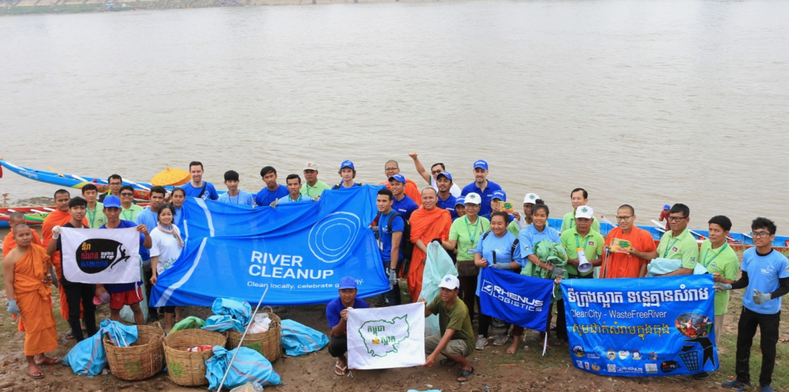
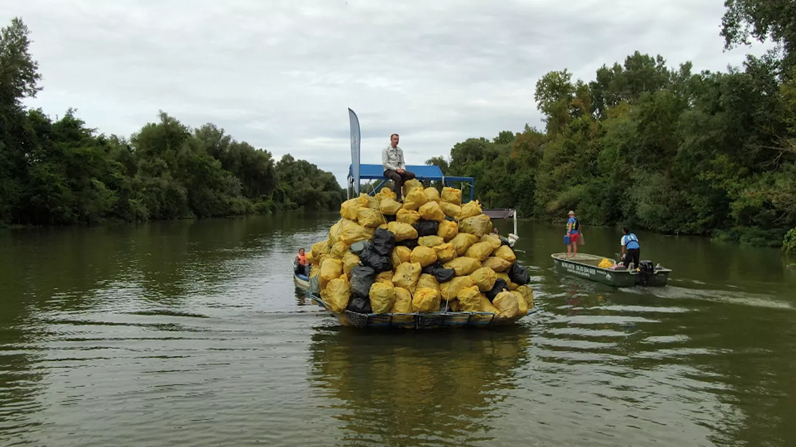

Community Action for Clean Water
Individuals and communities hold immense power in the fight for SDG 06. This page explores how grassroots action, student initiatives, and local collaboration can protect water resources for everyone.
Why Community Action Matters
Government policy and international treaties set the framework for water security, but it is communities — students, neighbours, local organisations — who translate those goals into everyday reality. When a community monitors its local river, organises a clean-up, or builds a shared grey-water recycling system, it creates change that no top-down policy alone can achieve.

Community volunteers organise a riverbank restoration in partnership with local schools.
The Three Pillars of Community Water Action
- Awareness — Educating neighbours, schools, and local businesses about water scarcity and personal water footprints.
- Advocacy — Pressuring local councils and institutions to invest in water infrastructure and reduce pollution.
- Action — Directly participating in clean-ups, monitoring schemes, and conservation projects that produce measurable results.
What Students Can Do Right Now
As students, we often underestimate the scale of our influence. Universities are large consumers of water, and student campaigns have historically driven significant institutional change. Here are concrete actions any student can take starting today:
- Run a campus water audit — count taps, measure flush cycles, and estimate daily usage in halls.
- Organise a "Blue Day" awareness event in your student union to showcase SDG 06 facts.
- Pressure your university to install water refill stations and phase out single-use plastic bottles.
- Start a social media challenge around water-saving habits (e.g. 3-minute shower challenge).
- Partner with a local NGO to fundraise for water access projects in underserved communities.
- Create informative posters or digital content about reducing water waste in student accommodation.

Student-led sustainability groups are driving real change on campuses worldwide.
Local Impact: Small Actions, Big Results
Water crises are not only a problem in distant countries. Urban rivers across Europe carry microplastics and agricultural run-off. Ageing pipe infrastructure in cities loses up to 30% of treated water to leaks before it ever reaches a tap. Local community action directly addresses these issues.

Volunteer-led river clean-ups remove hundreds of kilograms of waste annually from urban waterways.
Proven Community Strategies
- Water Monitoring Networks — Citizen science groups test local river water quality monthly and report findings to environmental agencies.
- Rainwater Harvesting — Community allotments and schools install low-cost rain barrels, reducing demand on mains water for irrigation.
- Grey-Water Reuse Systems — Neighbourhood cooperatives share guidelines and DIY kits for recycling bathroom and laundry water for gardens.
- Leak Reporting Campaigns — Simple local campaigns encouraging residents to report suspected pipe leaks have saved millions of litres in pilot boroughs.
Connecting Local Action to a Global Movement
Every drop saved locally contributes to the global SDG 06 target. When thousands of communities adopt water-conscious practices simultaneously, the cumulative effect is transformational. Digital platforms now allow local groups to share data, strategies, and success stories across borders, turning isolated efforts into a coordinated global campaign.


Access to safe water transforms lives — communities in both developed and developing nations benefit from collective water stewardship.
How to Get Started in Your Community
You do not need a large budget or formal organisation to make a start. The most impactful community water initiatives began with a single conversation, a shared concern, and a willingness to act.
- Identify your local waterway — Find the nearest river, stream, or reservoir and learn who manages it. Contact them to ask how you can help.
- Connect with existing groups — Search for local environmental groups, student sustainability societies, or national campaigns like the Rivers Trust.
- Use the AquaAction Simulator — Our Action Impact Simulator helps you calculate the real-world water savings of actions you are already considering.
- Submit your initiative — Share your project via our Feedback & Directory page so others can learn from and join your efforts.
- Document and share — Record your impact with photos, data, and stories. Sharing results motivates others and attracts further support.